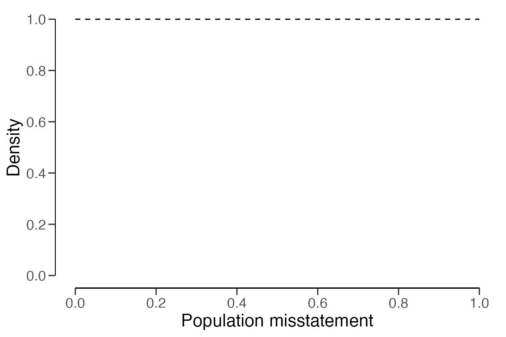
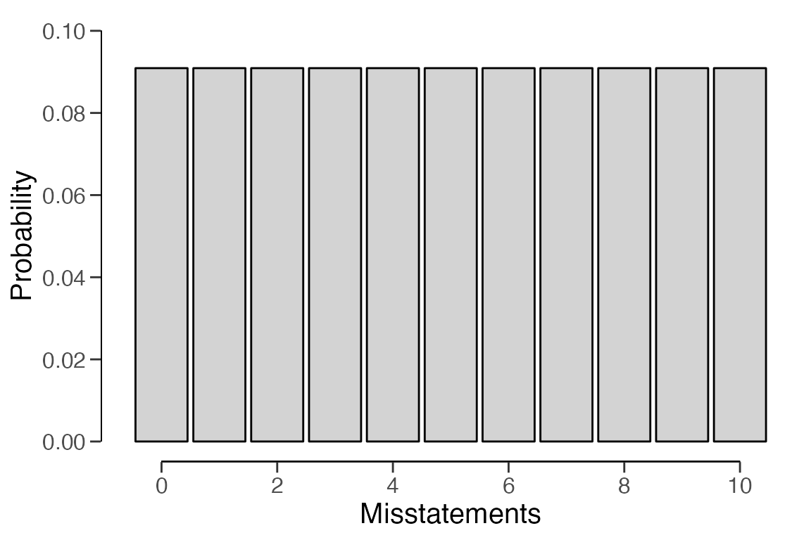
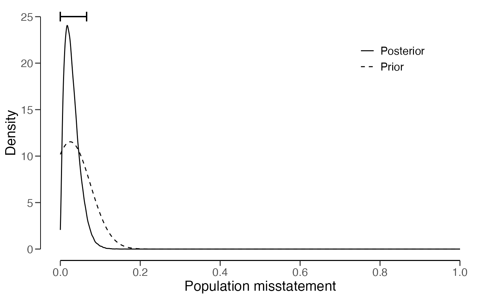
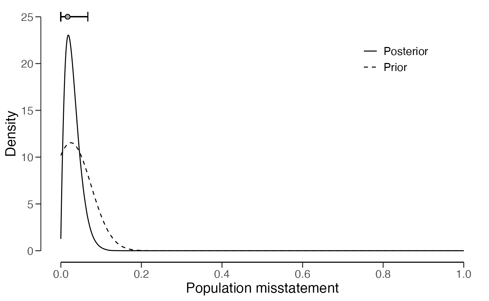

vignettes/creating-prior.Rmd
creating-prior.RmdThis vignette discusses how to set up a prior distribution for audit
sampling using the auditPrior() function in the
jfa package.
Bayesian statistics enables auditors to incorporate existing information about the misstatement into the sampling procedure via the prior distribution. After observing data, the information in the prior is updated to come to an overall conclusion about the misstatement in the population. The advantage of using a prior distribution is that it makes the underlying assumptions explicit and can therefore decrease the amount of audit work required to achieve the desired assurance. For example, when you have information from the auditee’s internal controls that indicates a low-risk profile, this information can be incorporated into the prior distribution in order to require less evidence from tests of details. Note that all incorporated prior information should be justified with appropriate audit evidence. What information can be incorporated into the prior distribution depends on what type of information is available, the quality of that information, and the situation at hand.
The auditPrior() function is used to specify a prior
distribution for audit sampling. Below is an enumeration of the several
ways that a prior distribution can be constructed using this
function.
method = 'default')
The default prior distributions are created using
method = 'default'. jfa’s default priors
satisfy two criteria: 1) they contain relatively little information
about the population misstatement and 2) they are proper (i.e., they
integrate to 1). The default priors in jfa are:
likelihood = 'poisson': gamma(\(\alpha\) = 1, \(\beta\) = 1)likelihood = 'binomial': beta(\(\alpha\) = 1, \(\beta\) = 1)likelihood = 'hypergeometric': beta-binomial(N, \(\alpha\) = 1, \(\beta\) = 1)likelihood = 'normal': normal(\(\mu\) = 0, \(\sigma\) = 1000)likelihood = 'uniform': uniform(min = 0, max = 1)likelihood = 'cauchy': Cauchy(\(x_0\) = 0, \(\gamma\) = 1000)likelihood = 't': Student-t(df = 1)likelihood = 'chisq': chi-squared(df = 1)
prior <- auditPrior(method = "default", likelihood = "binomial")
summary(prior)##
## Prior Distribution Summary
##
## Options:
## Likelihood: binomial
## Specifics: default prior
##
## Results:
## Functional form: beta(α = 1, β = 1)
## Mode: NaN
## Mean: 0.5
## Median: 0.5
## Variance: 0.083333
## Skewness: 0
## Information entropy (nat): 0
## 95 percent upper bound: 0.95
## Precision: NaNAll prior distributions can be visually inspected via the
plot() function.
plot(prior)
Furthermore, the predict() function produces the
predictions of the prior distribution on the data level for a sample of
n items. For example, the command below requests the
prediction of the default beta(1, 1) prior for a hypothetical sample of
6 items.
predict(prior, n = 6)## x=0 x=1 x=2 x=3 x=4 x=5 x=6
## 0.1428571 0.1428571 0.1428571 0.1428571 0.1428571 0.1428571 0.1428571The predictions of the prior distribution can be visualized using the
plot() function.

method = 'param')
You can manually specify the parameters of the prior distribution
with method = 'param' and the alpha and
beta arguments, which correspond to the first and
(optionally) second parameter of the prior as described above. For
example, the commands below create a beta(2, 10) prior distribution, a
normal(0.025, 0.05) prior distribution, and a Student-t(0.01) prior
distribution.
auditPrior(method = "param", likelihood = "binomial", alpha = 2, beta = 10)##
## Prior Distribution for Audit Sampling
##
## functional form: beta(α = 2, β = 10)
## parameters obtained via method 'param'
auditPrior(method = "param", likelihood = "normal", alpha = 0.025, beta = 0.05)##
## Prior Distribution for Audit Sampling
##
## functional form: normal(μ = 0.025, σ = 0.05)T[0,1]
## parameters obtained via method 'param'
auditPrior(method = "param", likelihood = "t", alpha = 0.01)##
## Prior Distribution for Audit Sampling
##
## functional form: Student-t(df = 0.01)T[0,1]
## parameters obtained via method 'param'method = 'strict')
You can construct an improper prior distribution with classical
properties using method = 'strict'. The posterior
distribution of from this prior yields the same results as the classical
methodology with respect to sample sizes and upper limits, but is only
proper once a single non-misstated unit is present in the sample (Derks
et al., 2022). For example, the command below creates an improper
beta(1, 0) prior distribution.
This method requires the poisson,
binomial, or hypergeometric
likelihood
auditPrior(method = "strict", likelihood = "binomial")##
## Prior Distribution for Audit Sampling
##
## functional form: beta(α = 1, β = 0)
## parameters obtained via method 'strict'method = 'impartial')
You can incorporate the assumption that tolerable misstatement is
equally likely as intolerable misstatement (Derks et al., 2022) using
method = 'impartial'. For example, the command below
creates an impartial beta prior distribution for a performance
materiality of 5 percent.
This method requires that you specify a value for the
materiality.
This method requires the poisson,
binomial, or hypergeometric
likelihood
auditPrior(method = "impartial", likelihood = "binomial", materiality = 0.05)##
## Prior Distribution for Audit Sampling
##
## functional form: beta(α = 1, β = 13.513)
## parameters obtained via method 'impartial'method = 'hyp')
You can manually assign prior probabilities to the hypothesis of
tolerable misstatement and the hypotheses of intolerable misstatement
(Derks et al., 2021) with method = 'hyp' in combination
with p.hmin. For example, the command below incorporates
the information that the hypothesis of tolerable misstatement has a
probability of 60% into a beta prior distribution.
This method requires that you specify a value for the
materiality.
This method requires the poisson,
binomial, or hypergeometric
likelihood
auditPrior(method = "hyp", likelihood = "binomial", materiality = 0.05, p.hmin = 0.6)##
## Prior Distribution for Audit Sampling
##
## functional form: beta(α = 1, β = 17.864)
## parameters obtained via method 'hyp'method = 'arm')
You can translate risk assessments from the Audit Risk Model
(inherent risk and internal control risk) into a prior distribution
(Derks et al., 2021) using method = 'arm' in combination
with the ir and cr arguments. For example, the
command below incorporates the information that the inherent risk is
equal to 90% and internal control risk is equal to 60% into a beta prior
distribution.
This method requires the poisson,
binomial, or hypergeometric
likelihood
auditPrior(method = "arm", likelihood = "binomial", materiality = 0.05, ir = 0.9, cr = 0.6)##
## Prior Distribution for Audit Sampling
##
## functional form: beta(α = 1, β = 12)
## parameters obtained via method 'arm'method = 'bram')
You can incorporate information about the mode and the upper bound of
the prior distribution using method = 'bram'. For example,
the code below incorporates the information that the mode of the prior
distribution is 1% and the upper bound is 60% into a beta prior
distribution.
This method requires the poisson,
binomial, or hypergeometric
likelihood
auditPrior(method = "bram", likelihood = "binomial", expected = 0.01, materiality = 0.05, ub = 0.6)##
## Prior Distribution for Audit Sampling
##
## functional form: beta(α = 1.023, β = 3.317)
## parameters obtained via method 'bram'method = 'sample')
You can incorporate information from an earlier sample into the prior
distribution (Derks et al., 2021) using method = 'sample'
in combination with x and n. For example, the
command below incorporates the information from an earlier sample of 30
items in which 0 misstatements were found into a beta prior
distribution.
This method requires the poisson,
binomial, or hypergeometric
likelihood
auditPrior(method = "sample", likelihood = "binomial", x = 0, n = 30)##
## Prior Distribution for Audit Sampling
##
## functional form: beta(α = 1, β = 30)
## parameters obtained via method 'sample'method = 'factor')
You can incorporate information from last years results, weighted by
a factor (Derks et al., 2021), into the prior distribution using
method = 'factor' in combination with x and
n. For example, the command below incorporates the
information from a last years results (a sample of 58 items in which 0
misstatements were found), weighted by a factor 0.7, into a beta prior
distribution.
This method requires the poisson,
binomial, or hypergeometric
likelihood
auditPrior(method = "factor", likelihood = "binomial", x = 0, n = 58, factor = 0.7)##
## Prior Distribution for Audit Sampling
##
## functional form: beta(α = 1, β = 40.6)
## parameters obtained via method 'factor'The objects returned by the auditPrior() function can be
used as input for the prior argument in the
planning() and evaluation() functions. Below
is small demonstration of how the prior distribution can be constructed
using these functions.
The prior distribution can be used the planning stage to calculate a
minimum sample size by providing the objected returned by the
auditPrior() function to the planning()
function. For example, the command below calculates the minimum sample
size to test the misstatement in the population against a performance
materiality of 5%, while using a beta(1, 10) prior distribution.
prior <- auditPrior(method = "param", likelihood = "binomial", alpha = 1, beta = 10)
planning(materiality = 0.05, likelihood = "binomial", prior = prior)##
## Bayesian Audit Sample Planning
##
## minimum sample size = 49
## sample size obtained in 50 iterations via method 'binomial' + 'prior'The prior distribution can be used the evaluation stage by providing
the objected returned by the auditPrior() function to the
evaluation() function. For example, the command below
evaluates the misstatement in the population with respect to a
performance materiality of 5% after seeing a sample of 60 items with 1
misstatement, while using a normal(0.025, 0.05) prior distribution.
prior <- auditPrior(method = "param", likelihood = "normal", alpha = 0.025, beta = 0.05)
eval <- evaluation(materiality = 0.05, x = 1, n = 60, prior = prior)
summary(eval)##
## Bayesian Audit Sample Evaluation Summary
##
## Options:
## Confidence level: 0.95
## Materiality: 0.05
## Hypotheses: H₀: Θ > 0.05 vs. H₁: Θ < 0.05
## Method: poisson
## Prior distribution: normal(μ = 0.025, σ = 0.05)T[0,1]
##
## Data:
## Sample size: 60
## Number of errors: 1
## Sum of taints: 1
##
## Results:
## Posterior distribution: Determined via MCMC sampling
## Most likely error: 0.020033
## 95 percent credible interval: [0, 0.067067]
## Precision: 0.047034
## BF₁₀: 5.7554
plot(eval)
The predictions of the posterior distribution on the data level can
be visualized using the plot() function. For example, the
command below shows the predictions of the posterior distribution for a
hypothetical (next) sample of 10 items.
